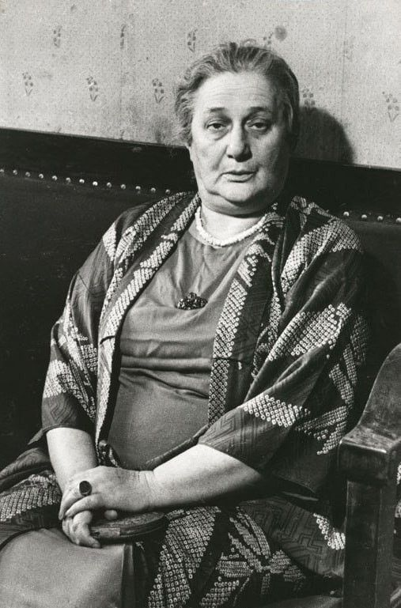

Гонения: «Блудница и монахиня»
14 августа 1946 года вышло постановление ЦК ВКП(б) «О журналах "Звезда" и "Ленинград"». Оно было направлено против двух ленинградских литературных журналов, в которых, по мнению партийного руководства, публиковались «идейно вредные» произведения. Вот ключевые выдержки из постановления: «В журналах "Звезда" и "Ленинград" была предоставлена литературная площадка таким пошлым и клеветническим выступлениям, как литературные записки Зощенко и стихи Ахматовой. (...) Ахматова является типичной представительницей чуждой нашему народу пустой безыдейной поэзии».
Докладчик на заседании ЦК, Андрей Жданов (секретарь Ленинградского обкома и горкома партии), добавил от себя: «Не то монахиня, не то блудница, а точнее — блудница и монахиня, у которой блуд смешан с молитвой». Эти слова были напечатаны в центральных газетах и стали официальной характеристикой творчества Ахматовой на следующие десять лет.
Последствия для Ахматовой были тяжёлыми. 19 августа 1946 года её исключили из Союза писателей СССР. Формальное решение было принято на заседании правления Союза писателей. Восстановлена Ахматова была только в 1951 году, после смерти Сталина и начала «оттепели». Члены Союза писателей получали пайки (продуктовые карточки) и доступ в спецраспределители. После исключения Ахматова потеряла этот источник существования. Ни одно издательство не имело права печатать её стихи. Единственной возможностью заработать оставались переводы (с французского, итальянского, армянского). Она переводила Бальзака, Стендаля, Кафку, а также поэтов народов СССР. В газетах «Правда», «Известия», «Ленинградская правда» регулярно появлялись статьи, где Ахматова называлась «врагом народа», «пустышкой», «литературной проституткой».
Михаил Зощенко (1894–1958) был одним из самых популярных советских прозаиков 1920-х — начала 1940-х годов. Его рассказы «Аристократка», «Баня», «История одной болезни» разошлись на цитаты. Однако после 1946 года его постигла та же участь, что и Ахматову. Зощенко был обвинён в «пошлости и вульгарности». Его исключили из Союза писателей, лишили пайков, перестали печатать. В 1950-е годы он пытался вернуться в литературу, но был допущен лишь к переводам и публикации отдельных вещей. Умер в нищете и забвении в 1958 году. Сравнение судеб Ахматовой и Зощенко позволяет увидеть, что репрессии 1946 года затронули не только поэзию, но и прозу. Оба жанра были подчинены единой идеологической линии. Таким образом, постановление ЦК стало важной вехой в истории советской цензуры.
Ахматова в письмах друзьям (например, Лидии Гинзбург) и дневниковых заметках почти не комментировала травлю публично. Однако сохранилось несколько фраз, которые цитируют современники. В ответ на предложение эмигрировать (после 1946 года) она сказала: «Меня не сломить. Я — Ахматова» (пересказ со слов Гинзбург). В письме к Пастернаку (1947) она писала: «Я знаю, что это [травля] не навсегда. Я буду работать. Это единственное, что я умею».
Андрей Александрович Жданов (1896–1948) был одним из ближайших соратников Сталина, секретарём ЦК ВКП(б) по идеологии. Он курировал литературу, искусство, науку. Именно он выступил с основным докладом о журналах «Звезда» и «Ленинград», в котором назвал Ахматову «блудницей и монахиней». После его смерти в 1948 году кампания пошла на убыль, но последствия для Ахматовой и Зощенко оставались в силе до 1951 года.
Постановление 1946 года стало поворотным пунктом в судьбе Ахматовой. Оно лишило её работы, средств к существованию и возможности публиковаться. Однако поэтесса не эмигрировала и не прекратила писать. В годы гонений она завершила «Поэму без героя» и продолжала вести дневники. Её выживание в тех условиях само по себе является фактом, который характеризует её личность.
